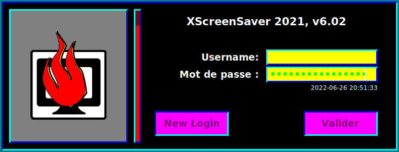

Sample theme:
Resource names:
| Color | Option name |
|---|---|
| #000000 | background |
| #ffffff | foreground |
| #0000ff | topShadowColor |
| #00ffff | bottomShadowColor |
| #ffff00 | text.background |
| #00ff00 | text.foreground |
| #ff00ff | button.background |
| #800080 | button.foreground |
| #808080 | logo.background |
| #800000 | thermometer.background |
| #ff0000 | thermometer.foreground |
| #008080 | borderColor |
xscreensaver-auth.demo.Dialog.background: #000000 xscreensaver-auth.demo.Dialog.foreground: #ffffff xscreensaver-auth.demo.Dialog.topShadowColor: #0000ff xscreensaver-auth.demo.Dialog.bottomShadowColor: #00ffff xscreensaver-auth.demo.Dialog.shadowWidth: 3 xscreensaver-auth.demo.Dialog.text.background: #ffff00 xscreensaver-auth.demo.Dialog.text.foreground: #00ff00 xscreensaver-auth.demo.Dialog.button.background: #ff00ff xscreensaver-auth.demo.Dialog.button.foreground: #800080 xscreensaver-auth.demo.Dialog.logo.background: #808080 xscreensaver-auth.demo.Dialog.thermometer.background: #800000 xscreensaver-auth.demo.Dialog.thermometer.foreground: #ff0000 xscreensaver-auth.demo.Dialog.borderColor: #008080 xscreensaver-auth.demo.Dialog.borderWidth: 3 xscreensaver*dialogTheme: demo